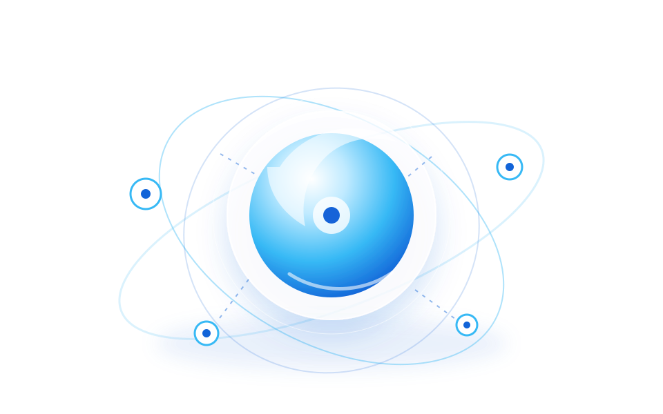
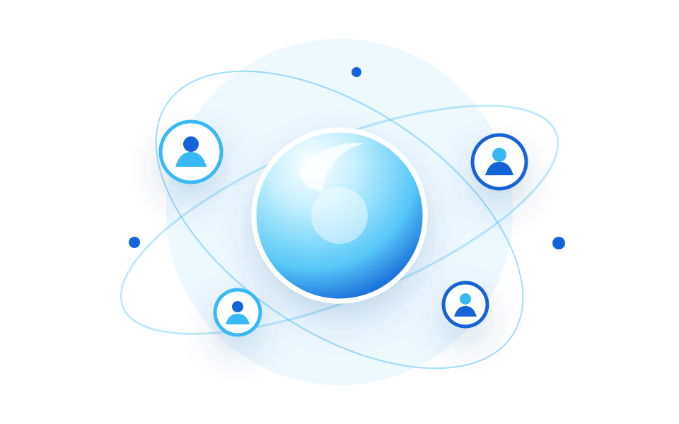
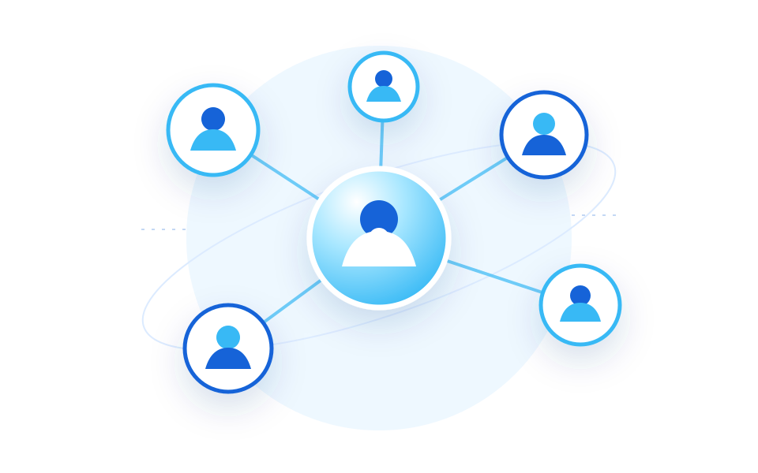

01 / 06Comunicación
Correo electrónico
La claridad también se envía.
Explorar el tema ↗Bitácora de aprendizaje · ICC
Herramientas digitales para comunicar con claridad, aprender en comunidad y construir una trayectoria académica que siga creciendo.
Seis temas. Una experiencia para conectarlos.
Comunicar · compartir · aprender
En el Instituto Consorcio Clavijero, elegir bien el canal ayuda a organizar el estudio, colaborar con respeto y mantener una presencia académica responsable.
Mostrando 6 herramientas.
La claridad también se envía.
Explorar el tema ↗Acuerdos que ponen al equipo en movimiento.
Explorar el tema ↗La distancia no tiene que interrumpir una idea.
Explorar el tema ↗Una comunidad crece con lo que aporta.
Explorar el tema ↗Aprender deja huella cuando lo escribes.
Explorar el tema ↗Tu trayectoria merece un espacio propio.
Explorar el tema ↗No hay coincidencias. Prueba otra palabra o cambia el filtro.
De la necesidad a la herramienta
Elige un propósito y descubre un canal para empezar. Son propuestas personales de uso académico.

Cuando necesito explicar una duda formal con contexto y conservar la respuesta.
Descubrir cómo usarlaCuando quiero coordinar tareas, confirmar horarios o compartir una actualización breve.
Descubrir cómo usarlaCuando necesito explicar un procedimiento, ensayar una exposición o comparar ideas al conversar.
Descubrir cómo usarlaCuando quiero intercambiar recursos y estrategias con una comunidad académica.
Descubrir cómo usarlaCuando quiero documentar lo que aprendo en distintos momentos del curso.
Descubrir cómo usarlaCuando quiero presentar una selección de mis proyectos y mi trayectoria académica.
Descubrir cómo usarlaUna actividad, seis momentos
Una exposición puede empezar con una consulta por correo, organizarse por chat, ensayarse en videollamada, enriquecerse en comunidad, explicarse en un blog y quedar documentada en un portafolio.
Cada herramienta abre una puerta.
Cierre · mi proceso formativo

Durante mis estudios en el ICC puedo combinar estas herramientas: el correo para comunicarme formalmente con mis docentes; la mensajería para coordinar tareas; las videollamadas para conversar y explicar; y los espacios sociales para compartir recursos, documentar aprendizajes y mostrar proyectos.
Usarlas con intención también implica escribir con claridad, verificar la información, cuidar la privacidad y reconocer el trabajo de otras personas. Incorporar citas en el texto y una lista de referencias en estilo APA ayuda a que mis publicaciones sean más transparentes y académicas (American Psychological Association, 2024).
“Conectar no es solo estar en línea: es aportar algo útil a la comunidad que aprende.”
Ciudadanía digital
Reviso la procedencia y la evidencia antes de compartir información.
Converso con claridad y reconozco que otras personas tienen distintos tiempos y contextos.
Decido qué información hago pública y cuido los datos de mi comunidad.
Doy crédito a las ideas, imágenes y materiales que utilizo.
Estos hábitos se relacionan con el enfoque informado, ético y participativo del Ministerio de Educación de Chile (s. f.). APA utiliza citas de autor y fecha vinculadas con una referencia completa (American Psychological Association, s. f.).
Lecturas consultadas
Fuentes institucionales y materiales de apoyo. Formato de referencias basado en la séptima edición de APA.
Como apoyo complementario, la actividad incluye el tutorial de PrograMate (2022) para crear un blog.
Comunicación 01 de 06
La claridad también se envía.
Una pregunta bien planteada puede abrir una conversación que te acompañe durante todo el curso.
Imaginarlo en el ICC01 · Comprender
Servicio para redactar, enviar y recibir mensajes entre direcciones electrónicas. Permite organizar conversaciones y adjuntar documentos o enlaces; es útil cuando la respuesta no necesita ser inmediata.
El flujo de Gmail contempla destinatarios, asunto, redacción y envío (Google, s. f.-c).
02 · Explorar
Conocer sus funciones ayuda a elegir el canal con intención.
El mensaje reúne destinatarios, asunto y cuerpo. En Gmail, “Para”, “Cc” y “Cco” permiten organizar a quién llega y qué direcciones se muestran.
Puedo redactar, revisar y responder cuando tenga el contexto necesario. Lo elegiría para una consulta que no requiera una conversación inmediata.
Un asunto específico y una petición principal ayudan a recuperar la conversación después. Es una propuesta de organización para mi estudio.
La ayuda de Gmail describe la redacción, las opciones de destinatarios y el envío de mensajes (Google, s. f.-c).
03 · Aplicar
Un escenario imaginado durante mis estudios en el Instituto Consorcio Clavijero.
Un día en el ICC
Escribiría desde mi cuenta institucional al docente con el asunto “Duda sobre la Actividad 4”, explicaría una pregunta concreta y adjuntaría el avance del trabajo si fuera necesario.
Así lo pondría en práctica
Identifico la actividad y formulo una pregunta concreta.
Escribo un asunto que permita reconocer el tema.
Adjunto únicamente el avance o enlace necesario y reviso los destinatarios.
Conservo la respuesta para consultar las indicaciones más adelante.
Buena práctica: asunto claro, saludo, petición específica y firma con nombre y grupo.
04 · Elegir con criterio
El objetivo, la audiencia y la evidencia que necesito conservar orientan mi elección.
Cuando necesito explicar una duda formal con contexto y conservar la respuesta.
Una pregunta clara, los archivos necesarios y una conversación fácil de localizar.
Revisaría los destinatarios y los archivos antes de enviar; evitaría incluir datos de compañeros que no sean necesarios.
Sigue explorando
Comunicación 02 de 06
Acuerdos que ponen al equipo en movimiento.
Un mensaje breve tiene más valor cuando deja claro qué hay que hacer, quién participa y cuándo se necesita.
Imaginarlo en el ICC01 · Comprender
Intercambio de mensajes breves en una aplicación conectada a internet. Puede ser individual o grupal y facilita coordinarse en el momento; algunas plataformas también permiten compartir archivos o iniciar llamadas.
Teams permite conversaciones individuales y grupales, además de llamadas desde el chat (Microsoft, s. f.-a).
02 · Explorar
Conocer sus funciones ayuda a elegir el canal con intención.
Teams permite conversaciones individuales y grupales. El chat facilita confirmar un horario o avisar que un recurso ya está disponible.
Un mensaje puede llegar al instante y responderse después. Acordar horarios y expectativas evita confundir disponibilidad con atención permanente.
Si una explicación se vuelve confusa, puedo pasar del chat a una llamada o preparar un correo con más contexto.
Teams reúne conversaciones individuales, grupales y llamadas desde el chat (Microsoft, s. f.-a). Los acuerdos de uso que propongo son ejemplos de organización académica.
03 · Aplicar
Un escenario imaginado durante mis estudios en el Instituto Consorcio Clavijero.
Un día en el ICC
En un chat de equipo acordaría la hora de una reunión, repartiría las partes de una exposición y compartiría el enlace a un documento de trabajo colaborativo.
Así lo pondría en práctica
Planteo un acuerdo o una necesidad breve.
Escucho las propuestas del equipo.
Confirmo responsables, entregables y fecha.
Dejo un resumen de las decisiones para que no se pierdan en la conversación.
Buena práctica: mantener el chat en el tema del curso y no asumir que todos responden al instante.
04 · Elegir con criterio
El objetivo, la audiencia y la evidencia que necesito conservar orientan mi elección.
Cuando quiero coordinar tareas, confirmar horarios o compartir una actualización breve.
Un resumen de acuerdos con responsables y fechas.
Acordaría el propósito del grupo y los horarios de atención. Para asuntos extensos, elegiría un canal con más espacio para explicar.
Sigue explorando
Comunicación 03 de 06
La distancia no tiene que interrumpir una idea.
Ver, escuchar y conversar al mismo tiempo puede convertir una duda compleja en un aprendizaje compartido.
Imaginarlo en el ICC01 · Comprender
Conversaciones en tiempo real que transmiten voz y video por internet. Hacen posible reunirse a distancia, conversar cara a cara y, en muchas plataformas, mostrar la pantalla o revisar materiales en conjunto.
Microsoft Teams ofrece llamadas de audio y video individuales o grupales desde un chat (Microsoft, s. f.-b).
02 · Explorar
Conocer sus funciones ayuda a elegir el canal con intención.
Las personas participan en el mismo momento. Teams permite iniciar llamadas de audio o video desde conversaciones individuales o grupales.
La guía educativa de la UNAM propone anunciar la sesión, organizar inicio, desarrollo y cierre, y promover la participación.
Después de conversar, redactaría los puntos principales y los siguientes pasos. Así, el trabajo no depende solo de recordar lo que se dijo.
Las funciones de llamada están documentadas por Microsoft (s. f.-b); la preparación de sesiones se apoya en Universidad Nacional Autónoma de México, Facultad de Filosofía y Letras (2020).
03 · Aplicar
Un escenario imaginado durante mis estudios en el Instituto Consorcio Clavijero.
Un día en el ICC
Con mi equipo realizaría una sesión breve para explicar un tema difícil, compartir una diapositiva y resolver dudas antes de entregar una actividad.
Así lo pondría en práctica
Comparto un objetivo y una agenda breve.
Compruebo audio, conexión y materiales.
Explico, escucho y anoto las dudas que surjan.
Registro acuerdos y defino el siguiente paso.
Buena práctica: probar audio y conexión, entrar a tiempo y pedir la palabra con cortesía.
04 · Elegir con criterio
El objetivo, la audiencia y la evidencia que necesito conservar orientan mi elección.
Cuando necesito explicar un procedimiento, ensayar una exposición o comparar ideas al conversar.
Notas de la sesión, dudas resueltas y próximos pasos.
Pediría autorización antes de grabar o compartir intervenciones y prepararía una alternativa si alguien tiene problemas de conexión.
Sigue explorando
Socialización 04 de 06
Una comunidad crece con lo que aporta.
Compartir un enlace es el inicio; explicar por qué es útil lo convierte en una aportación para la comunidad.
Imaginarlo en el ICC01 · Comprender
Plataformas donde las personas crean perfiles o comunidades para compartir información, ideas y contenidos, además de interactuar con otras personas mediante publicaciones, comentarios o grupos.
Las redes sociales facilitan crear comunidades y compartir información e ideas (University Marketing and Communications, s. f.).
02 · Explorar
Conocer sus funciones ayuda a elegir el canal con intención.
Las redes permiten formar comunidades para intercambiar información, ideas y contenidos. Un grupo reúne participantes alrededor de un interés común.
Antes de recomendar un material, revisaría su autoría, fecha, evidencia y relación con la actividad. Distinguiría una opinión de una fuente de estudio.
La ciudadanía digital incluye informarse, respetar a otras personas, reconocer a quienes crean contenidos y cuidar lo que hacemos público.
La definición de redes y comunidades se apoya en University Marketing and Communications (s. f.); los hábitos de participación se relacionan con el Ministerio de Educación de Chile (s. f.).
03 · Aplicar
Un escenario imaginado durante mis estudios en el Instituto Consorcio Clavijero.

Un día en el ICC
Participaría en un grupo académico para intercambiar recursos confiables, comentar estrategias de estudio y compartir avisos del curso, respetando las reglas del espacio.
Así lo pondría en práctica
Encuentro un recurso relacionado con el tema.
Reviso de dónde viene y qué evidencia ofrece.
Explico qué aporta y comparto el enlace original.
Escucho los comentarios y respondo con respeto.
Buena práctica: comprobar la fuente antes de compartir y cuidar la privacidad de compañeros.
04 · Elegir con criterio
El objetivo, la audiencia y la evidencia que necesito conservar orientan mi elección.
Cuando quiero intercambiar recursos y estrategias con una comunidad académica.
Un recurso contextualizado, su fuente original y una conversación respetuosa.
Revisaría la privacidad del grupo, evitaría difundir datos ajenos y comprobaría la información antes de amplificarla.
Sigue explorando
Socialización 05 de 06
Aprender deja huella cuando lo escribes.
Una entrada permite volver a lo aprendido, reconocer cómo cambian tus ideas y compartir el camino que seguiste.
Imaginarlo en el ICC01 · Comprender
Sitios que reúnen publicaciones o entradas de una persona o equipo. Sus temas pueden organizarse con títulos, fechas y etiquetas; una bitácora bien estructurada permite volver a las ideas y recursos con facilidad.
Blogger permite crear y gestionar un blog; las etiquetas ayudan a organizar y filtrar publicaciones (Google, s. f.-a; Nieves, 2025).
02 · Explorar
Conocer sus funciones ayuda a elegir el canal con intención.
Un blog reúne publicaciones de una persona o equipo. Crear un nombre, una dirección y una organización clara ayuda a reconocer el espacio.
Cada entrada podría partir de una pregunta y reunir una explicación propia, un ejemplo, una reflexión y las fuentes que la respaldan.
La navegación y la búsqueda ayudan a recuperar ideas. Revisar y actualizar las publicaciones mantiene útil la bitácora a lo largo del tiempo.
Blogger permite crear y gestionar un blog (Google, s. f.-a). La organización, la navegación y el archivo se relacionan con los componentes descritos por Nieves (2025).
03 · Aplicar
Un escenario imaginado durante mis estudios en el Instituto Consorcio Clavijero.
Un día en el ICC
Mantendría esta bitácora como cuaderno digital: publicaría síntesis de cada módulo, ejemplos de herramientas, reflexiones breves y referencias que pueda consultar más adelante.
Así lo pondría en práctica
Investigo y selecciono fuentes relacionadas con el módulo.
Escribo una explicación propia y la conecto con un ejemplo.
Reviso citas, ortografía, enlaces y texto alternativo.
Publico y corrijo la entrada si encuentro un error.
Buena práctica: actualizar el contenido, organizarlo por temas y dar crédito a las fuentes.
04 · Elegir con criterio
El objetivo, la audiencia y la evidencia que necesito conservar orientan mi elección.
Cuando quiero documentar lo que aprendo en distintos momentos del curso.
Entradas claras, organizadas por tema y acompañadas de sus fuentes.
Reconocería tanto las ideas que parafraseo como las citas textuales. APA utiliza autor y fecha vinculados con una referencia completa (American Psychological Association, s. f.).
Sigue explorando
Socialización 06 de 06
Tu trayectoria merece un espacio propio.
Seleccionar y explicar tus trabajos permite mostrar algo más que una entrega: hace visible lo que aprendiste.
Imaginarlo en el ICC01 · Comprender
Sitios web individuales para presentar información, proyectos, intereses o una trayectoria. A diferencia de un blog —centrado en nuevas entradas—, una página personal suele organizarse en secciones estables y puede funcionar como portafolio.
Google Sites permite organizar páginas y compartir un sitio con otras personas (Google, s. f.-b).
02 · Explorar
Conocer sus funciones ayuda a elegir el canal con intención.
Una página individual puede reunir presentación, proyectos, intereses y recursos. Google Sites permite crear, editar, organizar y compartir un sitio.
Seleccionaría trabajos e indicaría su propósito, fecha, mi aportación y lo que aprendí. Esta es una propuesta personal para construir mi portafolio.
El blog enfatiza las nuevas entradas; la página personal puede mantener secciones estables e incluir esa bitácora como una parte de su estructura.
La organización y el uso de Google Sites se apoyan en su ayuda oficial (Google, s. f.-b). La selección de evidencias es una propuesta de uso académico del autor.
03 · Aplicar
Un escenario imaginado durante mis estudios en el Instituto Consorcio Clavijero.
Un día en el ICC
Diseñaría una página-portafolio con una presentación, trabajos seleccionados, habilidades digitales y una sección de aprendizajes que pueda ampliar durante mis estudios.
Así lo pondría en práctica
Selecciono trabajos que representen mis aprendizajes.
Explico el propósito y mi aportación en cada proyecto.
Organizo los materiales con títulos y secciones claras.
Reviso los datos públicos y compruebo el enlace antes de compartirlo.
Buena práctica: compartir solo datos que deseo hacer públicos y revisar los permisos antes de difundir el enlace.
04 · Elegir con criterio
El objetivo, la audiencia y la evidencia que necesito conservar orientan mi elección.
Cuando quiero presentar una selección de mis proyectos y mi trayectoria académica.
Un portafolio actualizado que explique qué hice y qué aprendí.
Compartiría solo datos que deseo hacer públicos y revisaría los permisos del sitio. Evitaría incluir documentos o imágenes de otras personas sin su autorización.
Sigue explorando